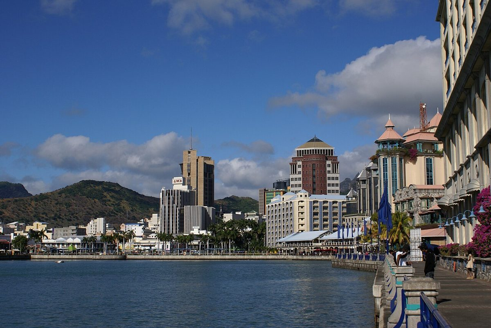

मॉरीशस का कहना है कि 1999 के बाद की सबसे खराब अशांति के बाद द्वीप शांत है, कर्फ्यू बढ़ाया गया
पुलिस ने गुरुवार को कहा कि मॉरीशस भर की सड़कें साफ हैं और पानी तथा जीवन यापन की लागत पर कई दिनों के विरोध के बाद काम फिर शुरू हो सकता है। सरकार ने रात का कर्फ्यू दो और रातों के लिए बढ़ा दिया।

मुख्य बिंदु
- कई दिनों के विरोध और दंगों के बाद गुरुवार को मॉरीशस शांत था। यह अशांति 1999 के बाद द्वीप पर देखी गई सबसे खराब अशांति थी। पुलिस बल ने कहा कि द्वीप की सभी सड़कें खुली हैं और अवरोधों से मुक्त हैं,…
- सरकार ने बुधवार को रात के कर्फ्यू को दो और रातों के लिए बढ़ा दिया था। कर्फ्यू राजधानी पोर्ट लुइस और मुख्य शहरी इलाकों में लागू है, और यह सोमवार को फैले दंगों और लूटपाट के बाद आया। आदेश लागू रहने…
- विरोध पिछले हफ्ते पानी की कमी और जीवन यापन की बढ़ती लागत को लेकर शुरू हुए थे। शुक्रवार, 9 अक्टूबर को पोर्ट लुइस के दक्षिण पश्चिम में बो बासिन-रोज़ हिल के पास एक सड़क अवरोध पर एक पुलिस अधिकारी ने…
कई दिनों के विरोध और दंगों के बाद गुरुवार को मॉरीशस शांत था। यह अशांति 1999 के बाद द्वीप पर देखी गई सबसे खराब अशांति थी। पुलिस बल ने कहा कि द्वीप की सभी सड़कें खुली हैं और अवरोधों से मुक्त हैं, अधिकारियों ने रात भर और गिरफ्तारियां कीं, और कर्फ्यू हटने के बाद काम और अन्य गतिविधियां सामान्य रूप से फिर शुरू हो सकती हैं।
सरकार ने बुधवार को रात के कर्फ्यू को दो और रातों के लिए बढ़ा दिया था। कर्फ्यू राजधानी पोर्ट लुइस और मुख्य शहरी इलाकों में लागू है, और यह सोमवार को फैले दंगों और लूटपाट के बाद आया। आदेश लागू रहने तक स्कूल बंद रहे हैं।
अशांति कैसे शुरू हुई
विरोध पिछले हफ्ते पानी की कमी और जीवन यापन की बढ़ती लागत को लेकर शुरू हुए थे। शुक्रवार, 9 अक्टूबर को पोर्ट लुइस के दक्षिण पश्चिम में बो बासिन-रोज़ हिल के पास एक सड़क अवरोध पर एक पुलिस अधिकारी ने एक महिला को गोली मारकर घायल कर दिया, जिसके बाद विरोध गुस्से में बदल गया। महिला को अस्पताल ले जाया गया। पुलिस ने कहा कि गोलीबारी मामले में एक अधिकारी को गिरफ्तार करके हिरासत में रखा गया है, और तीन अन्य को उस व्यक्ति की मदद न करने पर निलंबित किया गया है जिसकी जान खतरे में थी। अभियोजकों ने कहा कि जांच में घटनास्थल पर मौजूद अर्धसैनिक अधिकारियों को भी शामिल किया जाना चाहिए।
सोमवार, 12 अक्टूबर को द्वीप ने 1999 के बाद के सबसे खराब दंगे और लूटपाट देखे। प्रदर्शनकारी पुलिस से भिड़ गए, जलते टायरों और अन्य मलबे से सड़कें रोक दीं, और सार्वजनिक इमारतों को नुकसान पहुंचाया। एक स्थानीय मीडिया संस्थान के प्रकाशित वीडियो में लोग अधिकारियों की ओर आतिशबाज़ी जैसी चीज़ें चलाते दिखे। व्यवस्था बहाल करने के लिए अर्धसैनिक स्पेशल मोबाइल फोर्स को बुलाया गया।
प्रधानमंत्री नवीन रामगुलाम ने मंगलवार रात 8.30 बजे से बुधवार सुबह 6 बजे तक मुख्य शहरी इलाकों में पहले रात के कर्फ्यू का आदेश दिया। उन्होंने गोलीबारी की निंदा की और हिंसक प्रतिक्रिया को अस्वीकार्य कहा, और चेतावनी दी कि हिंसा और विनाश में शामिल लोगों को गंभीर परिणाम भुगतने होंगे।
सामान्य हालात की ओर धीमी वापसी
पुलिस ने कहा कि बुधवार सुबह पहला कर्फ्यू हटने के बाद स्थिति नियंत्रण में थी, हालांकि रात भर कुछ घटनाएं हुईं और और गिरफ्तारियां हुईं। मंत्रिमंडल ने बुधवार को आगे के कदमों पर विचार किया, और सरकार ने फिर कर्फ्यू को बुधवार और गुरुवार, दो और रातों के लिए बढ़ा दिया।
अंतरराष्ट्रीय परीक्षा देने वाले छात्रों को छोड़कर स्कूल बुधवार को दूसरे दिन भी बंद रहे, और स्थानीय रिपोर्टों ने कहा कि वे हफ्ते के बाकी दिनों में भी बंद रहेंगे। मुख्य निजी क्षेत्र समूह बिज़नेस मॉरीशस ने सदस्यों को अपने इलाके की सुरक्षा स्थितियों पर नज़र रखते हुए सामान्य गतिविधियां फिर शुरू करने की सलाह दी।
ऑक्सफोर्ड इकोनॉमिक्स के वरिष्ठ राजनीतिक अर्थशास्त्री जर्विन नायडू ने ब्लूमबर्ग को बताया कि यह अशांति देश के निवेश दृष्टिकोण में स्थायी टूट की जगह एक अस्थायी रुकावट जैसी लगती है। उन्होंने कहा कि विरोध बढ़ते सामाजिक और आर्थिक दबावों की ओर भी इशारा करते हैं, और द्वीप की स्थिरता और निवेशकों के लिए उसकी आकर्षकता बचाने के लिए सरकार को उन दबावों को दूर करना होगा।
हिंद महासागर का द्वीप मॉरीशस समुद्र तट रिसॉर्ट्स और वित्तीय सेवाओं के लिए जाना जाता है, और इसे अक्सर अफ्रीका के सबसे स्थिर लोकतंत्रों में गिना जाता है। इस पैमाने की पिछली अशांति 1999 में हुई थी, जब पुलिस हिरासत में एक लोकप्रिय संगीतकार की मौत ने कई दिनों के दंगों को भड़का दिया था।
स्रोत
मनीवेब के माध्यम से ब्लूमबर्ग की रिपोर्टिंग और एसोसिएटेड प्रेस की रिपोर्टिंग, नीचे लिंक की गई है।
टाइमलाइन
- Oct 9, 2026एक पुलिस अधिकारी ने बो बासिन-रोज़ हिल के पास एक सड़क नाकेबंदी पर एक महिला को गोली मारकर घायल कर दिया, और पानी की कमी तथा जीवन-यापन की लागत को लेकर विरोध प्रदर्शन उग्र हो गए।
- Oct 12, 2026मॉरीशस ने 1999 के बाद से अपनी सबसे भीषण दंगा और लूटपाट देखी, जिसमें सड़क नाकेबंदी, झड़पें और सार्वजनिक भवनों को नुकसान हुआ।
- Oct 13, 2026प्रधानमंत्री नवीन रामगुलाम ने पोर्ट लुइस सहित मुख्य शहरी क्षेत्रों में पहली रात का कर्फ्यू लगाने का आदेश दिया।
- Oct 14, 2026पुलिस का कहना है कि पहला कर्फ्यू उठने के बाद स्थिति नियंत्रण में है, और सरकार ने कर्फ्यू को दो और रातों के लिए बढ़ा दिया है।
- Oct 15, 2026पुलिस का कहना है कि कर्फ्यू उठने के बाद गुरुवार को द्वीप शांत है, सभी सड़कें खुली हैं और काम सामान्य रूप से फिर शुरू हो सकता है।